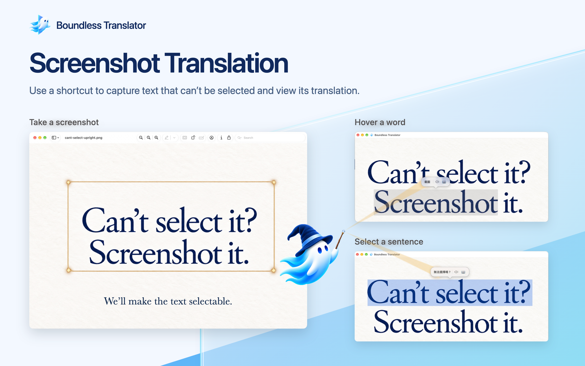
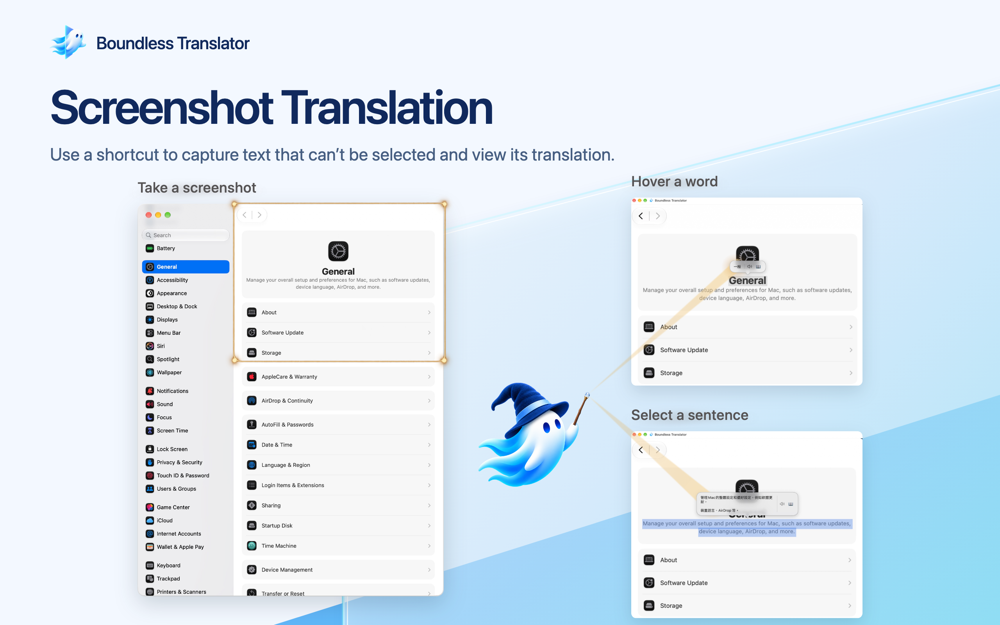
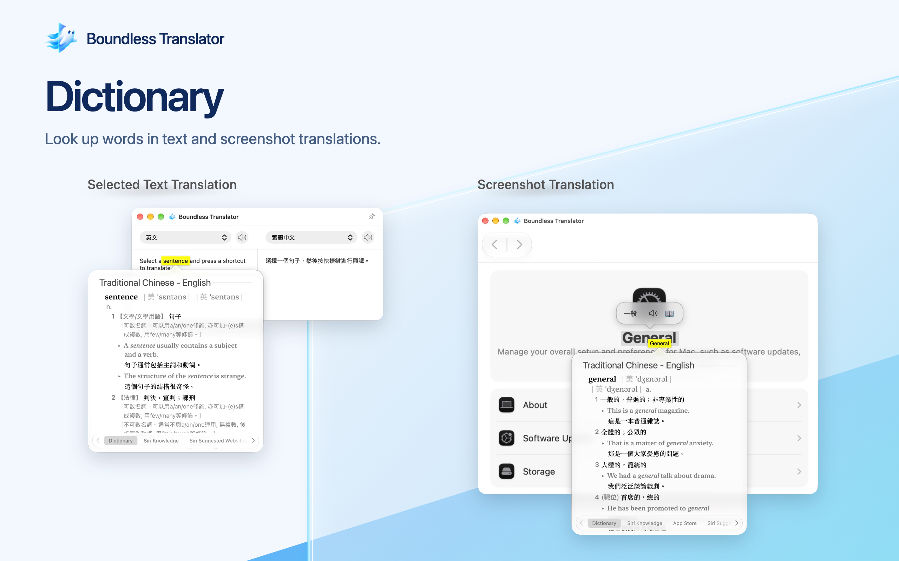

<!doctype html><html lang="zh-Hant"><meta charset="utf-8"><title>Glass 功能介紹</title><style>body{margin:24px;background:#20242a;color:#fff;font:16px system-ui}figure{margin:0 0 32px}figcaption{margin-bottom:10px}img{display:block;max-width:100%;height:auto}</style><figure><figcaption>選字翻譯：VS Code</figcaption><a href="01-selected-text-01-vscode-aligned.png"></a></figure>
<figure><figcaption>選字翻譯：Preview</figcaption><a href="01-selected-text-02-preview-aligned.png"></a></figure>
<figure><figcaption>Can’t select it：完整光束</figcaption><a href="02-screenshot-02-lettering-wizard-beam-connected-graphite.png"></a></figure>
<figure><figcaption>General：完整光束</figcaption><a href="02-screenshot-01-general-beam-connected-graphite.png"></a></figure>
<figure><figcaption>字典</figcaption><a href="03-dictionary-graphite.png"></a></figure>
<figure><figcaption>Settings：待最後確認</figcaption><a href="04-settings.png"></a></figure></html>
